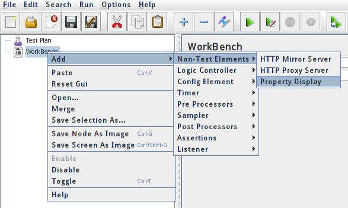

基本指标：CPU占用率、内存占用率、数据库连接池。
| 关键功能 | 平均使用次数 | 平均用户数 | 高峰时段用户数 | 平均响应时长 | 要接受最长响应时长 | 使用时间段 |
|---|---|---|---|---|---|---|
| XXX 功能 | 20,000 | 23,000 | < 4s | <= 7s | 8:00 ~ 21:00 | |
| XXX 功能 | 20,000 | 23,000 | < 4s | <= 7s | 8:00 ~ 21:00 | |
| XXX 功能 | 20,000 | 23,000 | < 4s | <= 7s | 8:00 ~ 21:00 | |
| XXX 功能 | 20,000 | 23,000 | < 4s | <= 7s | 8:00 ~ 21:00 | |
| XXX 功能 | 20,000 | 23,000 | < 4s | <= 7s | 8:00 ~ 21:00 |
每秒增加5个用户，直到达到平均并发数量。然后再持续运行几个小时。
| 监控对象 | 指标 | 工具 |
|---|---|---|
| 应用服务器 | CPU、MEM、IO | openview |
| 数据库服务器 | CPU、MEM、IO | openview |
| 数据库 | TOP、SQL等 | APM |
| 中间件 | 队列 | Console |
JVM参数在bin/jmeter.bat或bin/jmeter.sh中配置。HEAP大小默认512m，根据经验
最大不要超过物理内存的一半。不然运行速度会变慢甚至内存溢出。
日志级别调整在jmeter.properties中的log_level.jmeter=INFO。
以上属性也可以在GUI中设置：

docs目录下是Java Docs。
printable_docs/usermanual用户手册。
component_reference.html是最常用的核心组件。
extras目录下提供了Ant构造支持。JMeter把测试数据生成的.jtl文件放到extras
目录下，运行：
ant -Dtest=data.jtl report
生成测试统计报表。
如果用户有自己扩展包，直接放lib下。
Windows下：
jmeter.bat：GUI启动
jmeter-t.cmd：加载JMX文件，GUI
jmeter-n.cmd：加载JMX文件，非GUI
jmeter-n-r.cmd：加载JMX文件，非GUI，远程
jmeter-server.bat：服务器模式
mirror-server.cmd：镜像服务器，非GUI
shutdown.cmd：关闭非GUI实例（优雅地）
stoptest.cmd：关闭非GUI实例（中断式）
添加启动参数：
set JVM_ARGS="-Xms1024m -Xmx1024m =Dpropname=propvalue" jmeter -t test.jmx ...
Unix下：
jmeter：GUI启动
jmeter.sh：GUI启动，不带JVM参数
jmeter-server：服务器模式
mirror-server.sh：镜像服务器，非GUI
shutdown.sh：关闭非GUI实例（优雅地）
stoptest.sh：关闭非GUI实例（中断式）
添加启动参数：
JVM_ARGS="-Xms1024m -Xmx1024m =Dpropname=propvalue" jmeter -t test.jmx ...
lib：公用包，如测试数据库的JDBC驱动，测试JMS的类。
lib\ext：JMeter核心类库、组件与补丁都放在下。如果自己写的扩展组件也放这里。
如果不想把扩展包放在这里，就要在jmeter.properties文件中定义search_paths。
这里只放JMeter用的组件，不要放公用包。
lib\junit：Junit脚本。
$JAVA_HOME/jre/lib/ext下的公用包。
jmeter.properties中定义user.classpath属性。
注意：
CLASSPATH变量。要在另外
在-jar的-classpath或-cp中指定。